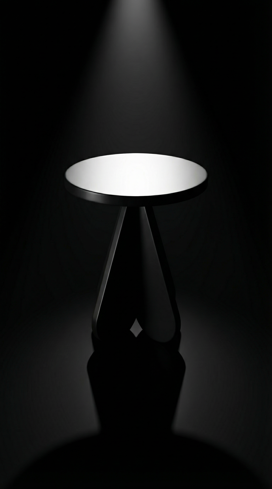
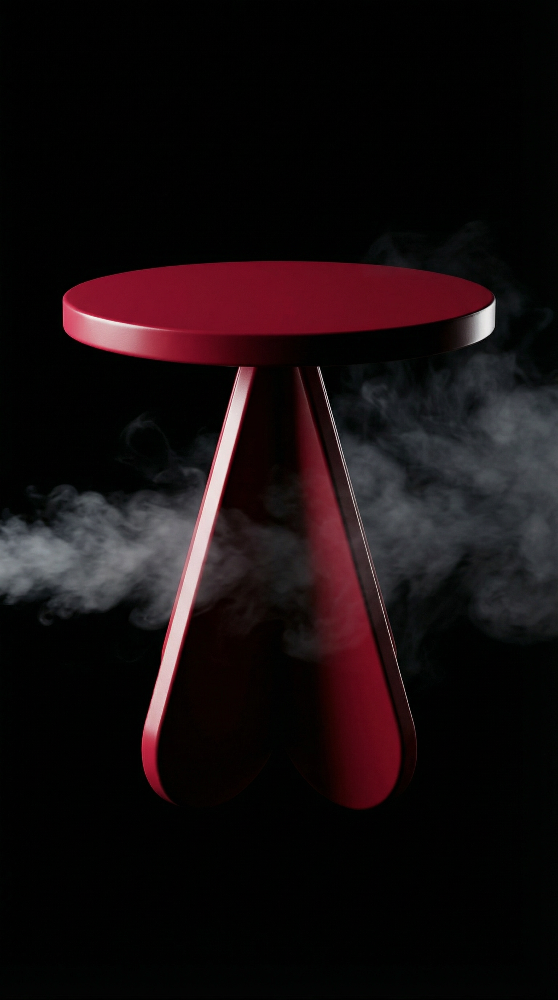

01

Concept 01
BLACK VOID
Matte Black — Spotlight Reveal
Kling AI Prompt
A cinematic 4K product video. The side table in the image must remain completely unchanged in shape, color, proportions, and surface — no morphing, no deformation. The scene begins in total darkness. The single razor-sharp spotlight slowly fades in from directly above, dramatically revealing the deep matte black side table. The hard light carves deep, graphic shadows on the floor. The camera is completely static. The object never moves. Only the light moves — slow, deliberate, powerful. The atmosphere is cold, confrontational, and runway-like.
연출 의도
어둠 속에서 빛 하나로 존재감을 드러내는 퍼포먼스. "가구는 퍼포먼스다"라는 likewant 철학의 시각화.
02

Concept 02
CRIMSON SMOKE
Deep Crimson Red — Smoke Silhouette
Kling AI Prompt
A dramatic 4K product video. The side table must remain completely unchanged in shape, color, proportions, and surface — no morphing, no deformation. The deep crimson red side table sits perfectly still against a black background. Thin wisps of white smoke slowly drift across the frame from left to right, partially obscuring and revealing the sculptural silhouette. A single hard side light creates a sharp edge-light on the table's profile. The camera performs an extremely slow push-in. The object never moves. Only the smoke and camera move. The atmosphere is mysterious, cold, and cinematic.
연출 의도
스모크가 실루엣을 가렸다 드러내는 미스터리한 연출. 크림슨 레드의 강렬한 존재감과 시크한 무드의 조합.
03

Concept 03
WHITE GALLERY
Pure White — Gallery Sunlight
Kling AI Prompt
A 4K architectural video. The side table must remain completely unchanged in shape, color, proportions, and surface — no morphing, no deformation. In a stark white minimalist gallery, the harsh directional sunlight slowly moves across the room, causing the long dramatic shadow of the white side table to sweep across the polished concrete floor. The camera is completely static, capturing the passage of time. The object never moves. Only the light and shadow move. The atmosphere is cold, architectural, and serene.
연출 의도
화이트 온 화이트의 극한 미니멀리즘. 빛의 이동만으로 시간의 흐름을 담는 갤러리 무드.
04

Concept 04
ELECTRIC BLUE MIRROR
Cobalt Blue — Mirror Reflection
Kling AI Prompt
An ultra-smooth 4K product video. The side table and its reflection must remain completely unchanged in shape, color, and proportions — no morphing, no deformation. The camera executes a very slow, seamless vertical tilt-up, starting from the reflection on the mirror floor and rising to the actual electric cobalt blue side table. Cold blue-tinted studio lighting from the sides creates sharp highlights on the edges. The object is perfectly static. Only the camera moves. The atmosphere is cold, futuristic, and bold.
연출 의도
반사에서 실체로. 미러 플로어의 대칭 구도가 미래적 무드를 극대화. 블루 에지 라이트가 조각적 형태를 강조.
05

Concept 05
OLIVE CONCRETE
Deep Olive Green — Brutalist Architecture
Kling AI Prompt
A 4K cinematic lifestyle video. The side table must remain completely unchanged in shape, color, proportions, and surface — no morphing, no deformation. The moody, directional warm-toned spotlight slowly moves across the raw brutalist concrete wall and the deep olive green side table, creating a play of chiaroscuro lighting. The architectural design book on the table remains untouched. The camera performs a very slow, gentle orbit from left to right. The object is static. Only the light and camera move. The atmosphere is sophisticated, editorial, and architecturally refined.
연출 의도
브루탈리즘 콘크리트와 올리브 컬러의 대비. 건축적 공간 속 오브제로서의 가구를 보여주는 에디토리얼 숏.
06

Concept 06
MUSTARD RUNWAY
Mustard Gold — Fashion Runway
Kling AI Prompt
A high-fashion 4K video. The side table must remain completely unchanged in shape, color, proportions, and surface — no morphing, no deformation. On a dark fashion runway, the overhead spotlights slowly pulse, creating a subtle blooming and dimming effect on the mustard gold side table. The reflection on the glossy black runway floor shimmers accordingly. The camera is completely static. The object never moves. Only the lighting intensity changes. The atmosphere is high-fashion, editorial, and bold.
연출 의도
패션 런웨이 위의 가구. "가구도 패션이다"라는 대담한 선언. 스포트라이트의 호흡이 존재감을 증폭.
07

Concept 07
BLUSH NEON
Dusty Blush Pink — Neon Backlight
Kling AI Prompt
A futuristic 4K product video. The side table must remain completely unchanged in shape, color, proportions, and surface — no morphing, no deformation. In a dark room, the vertical neon white light strip behind the dusty blush pink table slowly flickers on and off with a soft hum. The front of the table remains dimly lit. The camera is static. The object never moves. Only the neon light flickers. The atmosphere is cold, futuristic, and edgy.
연출 의도
네온과 더스티 핑크의 대비. 차가운 미래적 무드 속에서 컬러의 미묘한 뉘앙스를 드러내는 에지 있는 연출.
08

Concept 08
TERRACOTTA ARCH
Terracotta Orange — Concrete Arch
Kling AI Prompt
An architectural 4K lifestyle video. The side table must remain completely unchanged in shape, color, proportions, and surface — no morphing, no deformation. The warm directional sunlight streaming through the concrete arch slowly fades to a cool evening light. The dramatic rim light on the terracotta orange table softens and the shadows lengthen. The pampas grass remains still. The camera is static. The object never moves. Only the light changes, simulating a time-lapse from day to dusk. The atmosphere is bold, warm yet sophisticated.
연출 의도
콘크리트 아치 속 테라코타. 낮에서 저녁으로의 자연광 전환이 공간의 숨결을 담는 건축적 라이프스타일 숏.
09

Concept 09
CHARCOAL RAIN
Charcoal Grey — Cinematic Rain
Kling AI Prompt
A dramatic 4K cinematic video. The side table must remain completely unchanged in shape, color, proportions, and surface — no morphing, no deformation. The heavy rain continues to fall, with water droplets splashing on the glistening surface of the charcoal grey table and the wet black stone ground. The cold blue-white spotlight subtly flickers as if from a distant storm. The camera performs an extremely slow dolly-in. The object is static. Only the rain and camera move. The atmosphere is raw, powerful, and cinematic.
연출 의도
빗속의 가구. 극한의 환경에서도 흔들리지 않는 존재감. 물방울이 만드는 시각적 ASMR과 시네마틱 무드.
10

Concept 10
DUO B&W
Matte Black + Matte White — Graphic Duo
Kling AI Prompt
A graphic 4K conceptual video. The two side tables must remain completely unchanged in shape, color, proportions, and surface — no morphing, no deformation. The single overhead spotlight slowly rotates, causing the shared pool of light and the overlapping shadows of the black and white tables to move in a circular motion on the concrete floor. The tables themselves are perfectly static. The camera is static. Only the light and shadows move. The atmosphere is graphic, bold, and conceptual.
연출 의도
B&W 대비의 정수. 빛의 회전이 만드는 그림자의 춤. likewant의 Black & White 디자인 언어를 가장 직접적으로 표현.